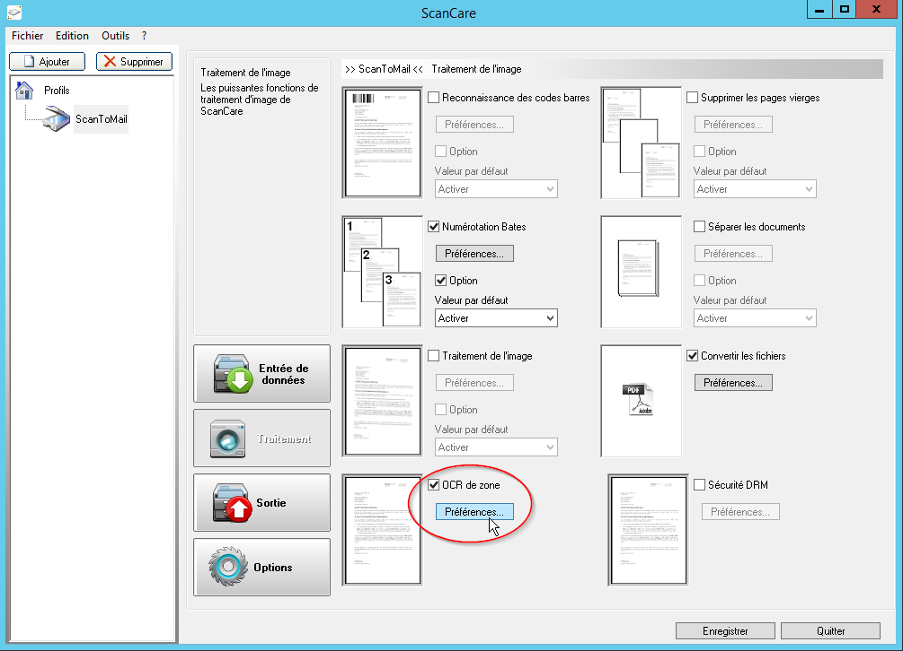
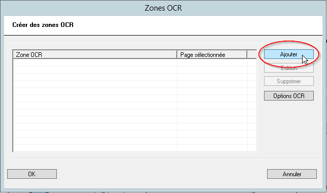

Watchdoc ScanCare - Configurer l'OCR de zones
Principe
La fonction OCR de zone permet de préciser la reconnaissance de caractères sur les documents numérisés, notamment en précisant les zones dans lesquelles se trouve le texte ou les chaînes de caractères à extraire.
Pour activer la reconnaissance de caractères, il est nécessaire de disposer des modules :
-
Scanner Power Tools (SPT) ;
-
Module OCR.
Procédure
Pour configurer l'OCR de zones :
-
lancez le programme de configuration de Watchdoc ScanCare ;
-
sélectionnez un profil de numérisation existant ou créez-en un ;
-
rendez-vous dans la section Traitement ;
-
cochez la case OCR de zone, puis cliquez sur le bouton Préférences ;

-
dans l'interface Zones OCR, cliquez sur le bouton Ajouter pour définir les zones concernées par la reconnaissance de caractères ;

-
dans l'interface Open affichée, parcourez votre environnement local (ou réseau) pour sélectionner un modèle de document servant à délimiter les zones sur lesquelles appliquer le traitement. Lors de l'installation, un dossier spécifique est créé pour cet usage : C:\Program Files (x86)\Doxense\ScanCare\Templates\Fields.
-
A l'aide de votre souris, déplacez l'outil de sélection pour délimiter la zone sur laquelle appliquer le traitement OCR.
-
Lorsque la zone est encadrée en rouge, complétez les champs suivants :
Description de zone : indiquez dans ce champ le contenu de la zone délimitée ;
Page : si le document comporte plusieurs pages, indiquez le numéro de la page sur laquelle doit s'appliquer le traitement ;
Dernière page : cochez la case si la zone se trouve à la dernière page du document ;
Page entière : cochez la case si le traitement d'OCR doit s'appliquer sur la page entière.
-
Pour préciser la nature des données traitées par OCR. cliquez sur le bouton

Type de texte : dans la liste, précisez si le texte à analyser est normal ou issu d'une imprimante matricielle ;
Liste des Caractères : dans la liste, sélectionnez une liste des caractères que la zone à traiter est susceptible de contenir.
Dictionnaire : dans la liste des fichiers enregistrés dans le dossier C:\Program Files (x86)\Doxense\ScanCare\resources, sélectionnez un dictionnaire dans lequel Watchdoc ScanCare cherche des mots à comparer avec les mots trouvés lors du traitement. Cette comparaison avec des mots existants permet d'optimiser le traitement OCR.

-
Cliquez sur le bouton Tester pour vérifier le paramétrage de la zone.

-
Cliquez sur le bouton OK pour valider le paramétrage de la zone OCR.
-
Réitérez l'opération pour toutes les zones du document que vous souhaitez soumettre au traitement OCR.